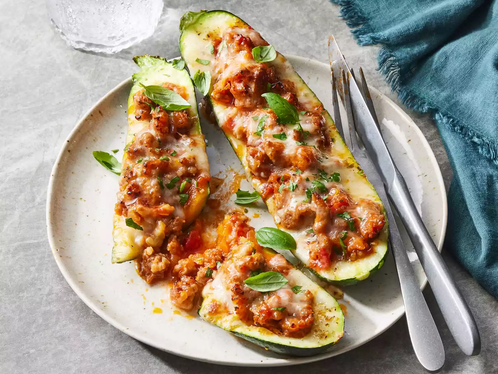

Zucchini Boats

Description
Still finding zucchini at the back of the refrigerator? Use it in a
different way with this fun presentation that takes the summer veg and
stuffs it with sausage, tomato sauce, Italian seasoning, and more, then
tops it with cheese before baking it all together for an easy and
fresh-tasting dinner.
Ingredients
- 4 (8 ounce) zucchini
- 1 teaspoon dried Italian seasoning
- 1/4 teaspoon ground black pepper
- 1 teaspoon kosher salt, divided
- 1 pound mild Italian pork sausage
- 1/2 cup minced yellow onion
- 2 teaspoons minced garlic
- 1/2 teaspoon crushed red pepper
- 1 1/2 cups marinara sauce
- 6 ounces shredded low-moisture whole-milk mozzarella cheese
- 1 ounce grated Parmesan cheese
-
1 tablespoon finely chopped mixed fresh tender herbs, such as flat-leaf
parsley and basil
Steps
- Gather the ingredients.
-
Preheat the oven to 400 degrees F (175 degrees C). Spray a 13-x9-inch
baking dish with cooking spray.
-
Cut zucchini in half lengthwise; cut off and discard stem ends. Using a
spoon, scoop and scrape out pulp from center of each zucchini half,
creating a 1/2-inch-thick shell. Measure out 3/4 cup zucchini pulp, and
discard or reserve remaining pulp for another use. Arrange zucchini
halves, cut side up, in prepared baking dish. Sprinkle evenly with
Italian seasoning, black pepper, and 1/2 teaspoon of the salt.
-
Heat a large skillet over medium-high heat. Add Italian sausage; cook,
stirring and breaking up with a spatula, until browned and crumbly,
about 5 minutes. Stir in onion, garlic, crushed red pepper, the 3/4 cup
zucchini pulp, and remaining 1/2 teaspoon salt; cook, stirring
occasionally, until vegetables are softened and liquid is absorbed,
about 5 minutes. Stir in marinara, and bring to a simmer over
medium-high heat. Simmer, undisturbed, until slightly thickened, 3 to 5
minutes. Remove from heat.
-
Spoon about 1/2 cup pork mixture into each zucchini half; sprinkle
evenly with mozzarella and Parmesan.
-
Bake in the preheated oven until zucchini is tender and cheese is melted
and golden brown, 20 to 25 minutes. Sprinkle evenly with herbs; serve
immediately.